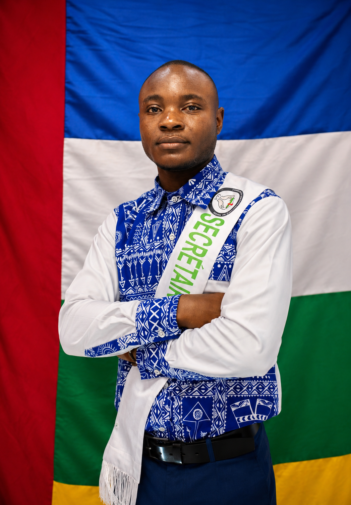
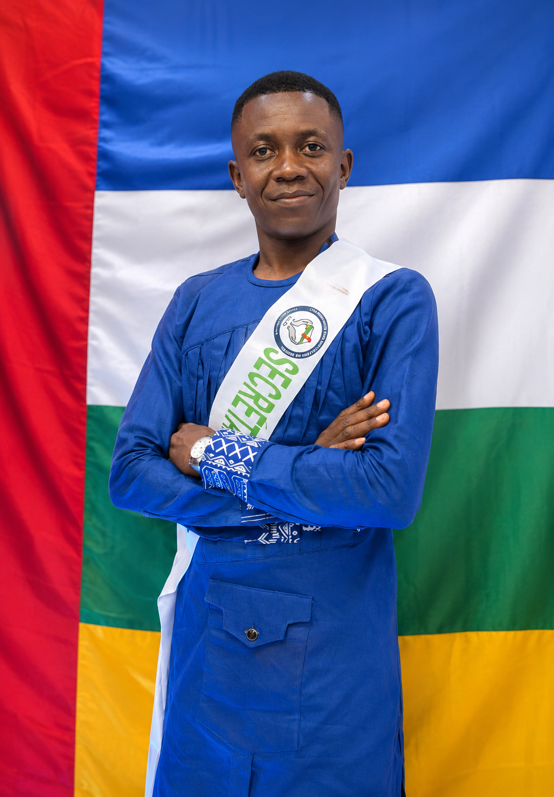
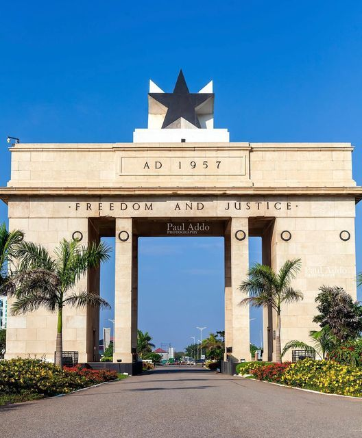
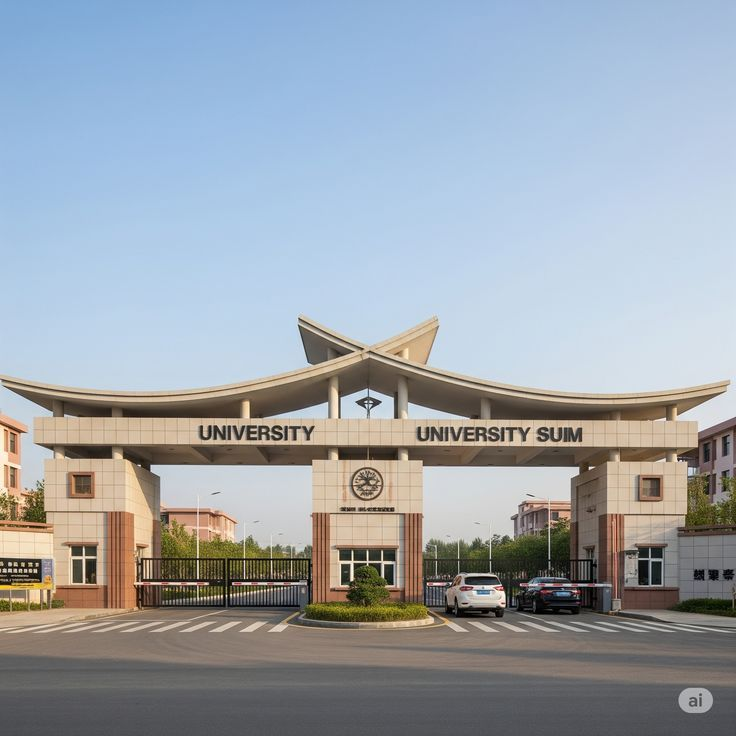
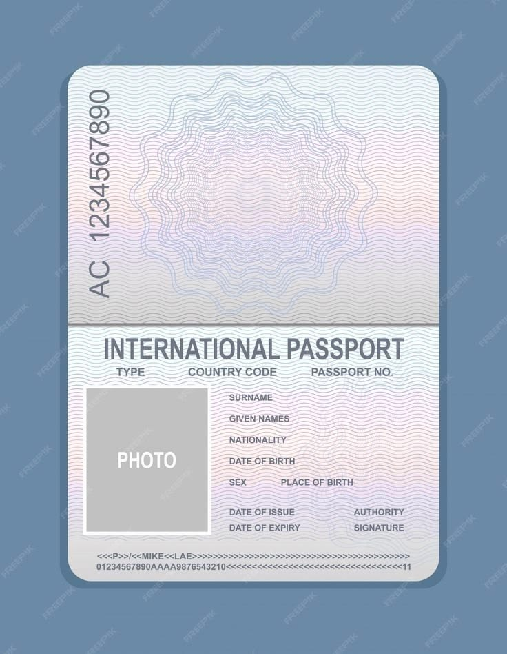
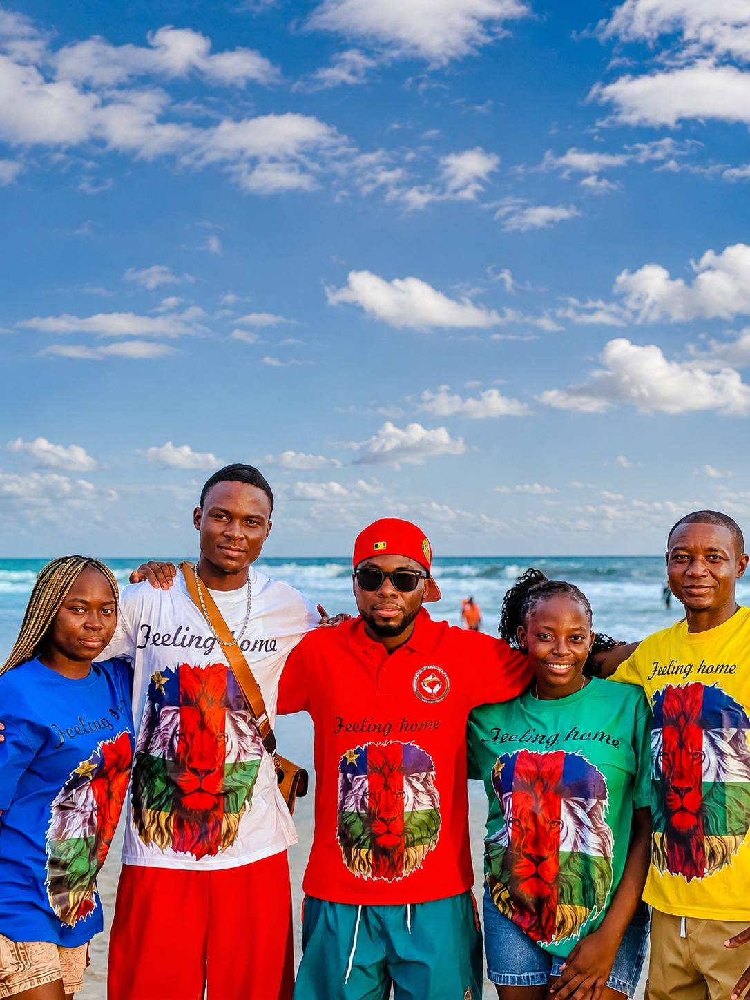

Éducation · Jeunesse
AESCG
Association des étudiants et stagiaires centrafricains au Ghana.

Communauté centrafricaine au Ghana
Une communauté forte pour rassembler, accompagner et valoriser les Centrafricains vivant au Ghana.
CCG en images
Regardez ce moment de partage et de fraternité avec la Communauté de Centrafrique du Ghana.
Nos organisations partenaires
Des structures engagées qui renforcent l’unité, l’entraide et le rayonnement de notre communauté.
Éducation · Jeunesse
Association des étudiants et stagiaires centrafricains au Ghana.


Sport · Fraternité
Une équipe qui fait vivre l’esprit de la Centrafrique sur les terrains du Ghana.
Trouvez rapidement les documents importants de la communauté.
3 documents disponibles
Aucun document ne correspond à votre recherche.
La République centrafricaine (RCA) est un pays d'Afrique centrale riche en diversité naturelle et culturelle. Elle est bordée par le Tchad, le Soudan, le Soudan du Sud, la République démocratique du Congo, le Congo et le Cameroun.
La capitale est Bangui, située sur les rives de la rivière Oubangui. Le pays est principalement couvert de forêts tropicales et de savanes, avec des parcs nationaux remarquables comme la réserve de Dzanga-Sangha.
Forêts, savanes et rivières façonnent le cœur de l'Afrique.
Une mosaïque de 80 groupes ethniques, de langues et de traditions.
Un héritage national fondé sur l'indépendance, la résilience et l'unité.

Faustin-Archange Touadéra est le président de la République centrafricaine. Il œuvre pour la stabilité et le développement du pays, en renforçant la paix, l'éducation et les infrastructures.

Un lieu confortable pour les visiteurs, situé à Bangui
.jpeg)
Un marché animé où découvrir l'artisanat local, les épices et la gastronomie centrafricaine.

Une destination naturelle majeure, parfaite pour les safaris et les paysages verdoyants de l'Afrique centrale.
La Communauté de Centrafrique du Ghana rassemble les Centrafricains vivant au Ghana afin de promouvoir l'unité, la solidarité et l'entraide.
Construire une communauté forte, organisée et engagée.

Cher(e)s Compatriotes et Ami(e)s de la Communauté Centrafricaine du Ghana, je vous souhaite la bienvenue sur notre site internet, qui vous permettra de suivre nos activités et d'accéder à des informations actualisées sur nos missions et services. Ce portail est destiné à vous orienter, que vous soyez résident ou en visite au Ghana, tout en relayant régulièrement l'actualité nationale centrafricaine et des événements locaux. Vos contributions seront appréciées pour améliorer nos rubriques. Bienvenue et bonne navigation ! Singuila
Président

Vice-Président

Trésorier Général

Secrétaire Général

Secrétaire Général Adjoint
Nous accompagnons les Centrafricains vivant au Ghana dans leurs démarches administratives, scolaires, professionnelles et sociales.

Nous vous aidons à traduire tous vos documents en anglais auprès des entités compétentes afin de faciliter vos différentes admissions.

Vous êtes au Ghana et souhaitez rentrer au pays sans passeport ? Nous pouvons vous accompagner pour obtenir un laissez-passer auprès du consulat.

Nous vous aidons dans votre orientation après votre arrivée au Ghana et facilitons votre admission dans une université accréditée.

Besoin d’une lettre dinvitation ou d’un accompagnement pour votre visa ? La communauté vous accompagne.

Nous travaillons avec plusieurs écoles de langues efficaces au Ghana pour vous aider à choisir selon votre budget.

Nous vous accompagnons dans les démarches d’admission provisoire ou définitive dans votre domaine d’études.

Nous vous aidons pour toutes démarches liées au renouvellement de votre permis de résidence avec des prix abordables.

Nos agents peuvent vous aider à trouver un logement adapté à votre durée de séjour et votre budget.

Réunion annuelle de la communauté.

Activités sportives communautaires.
Investigation des membres du bureau exécutif de la communauté.
Témoignages
.jpeg)
« Les activités de la communauté m'ont donné confiance et m'ont permis de mieux m'intégrer au Ghana. »
« L'accompagnement de la CCG m'a beaucoup aidé dans mes démarches et dans ma vie quotidienne. »

« Je me sens entourée et soutenue. La CCG est une véritable famille pour les Centrafricains au Ghana. »
Accra, Ghana
WhatsApp : 233596860669
Email : contact@ccg.org
Avec le soutien de

Mr Herithier Rodolphe Bonheur DONENG WANZOUMAN
Mars 2024